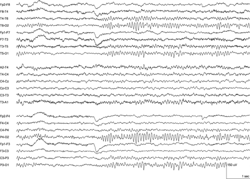
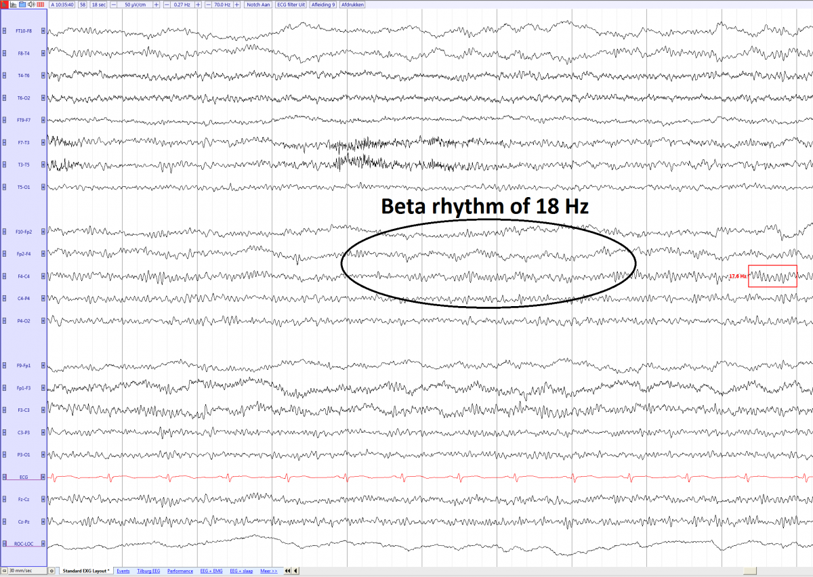

There are four main rhythms to memorize: Alpha, Beta, Theta, and Delta.
Alpha is the posterior dominant rhythm (PDR) of most calm adults with their eyes closed.

Image Source: Andrii Cherninskyi
You can see it here on the channels that involve O1 and O2. This is because those channels are in the occipital chain, which is on the back of the head.
Alpha has 8-13 Hz. It's usually under 50uV and synchronous.
Beta
13-35 Hz
Generally 5-10 microvolts in amplitude, but never more than 20 uV
If the beta activity is 30% asymmetrical or more, this is abnormal.
Reaches maximum amplitude in the frontal and central areas
Shows up the most in drowsiness
Benzodiazepines and barbituates cause high voltage Beta
Mouse over the image to zoom in to count the waves:

Image Source: EEGpedia
Theta
4-<8 Hz
Most common in kids or drowsy adults
Delta
.5-<4 Hz
Persistent focal delta is a sign of possible underlying tumors